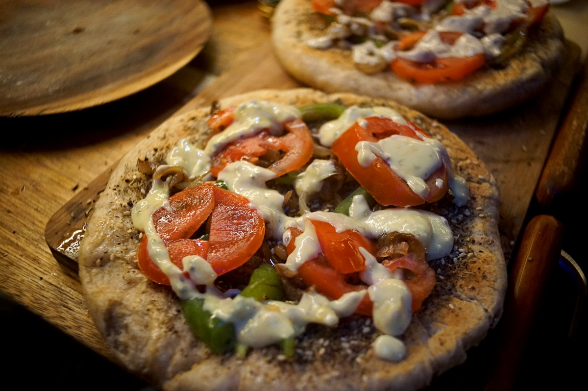
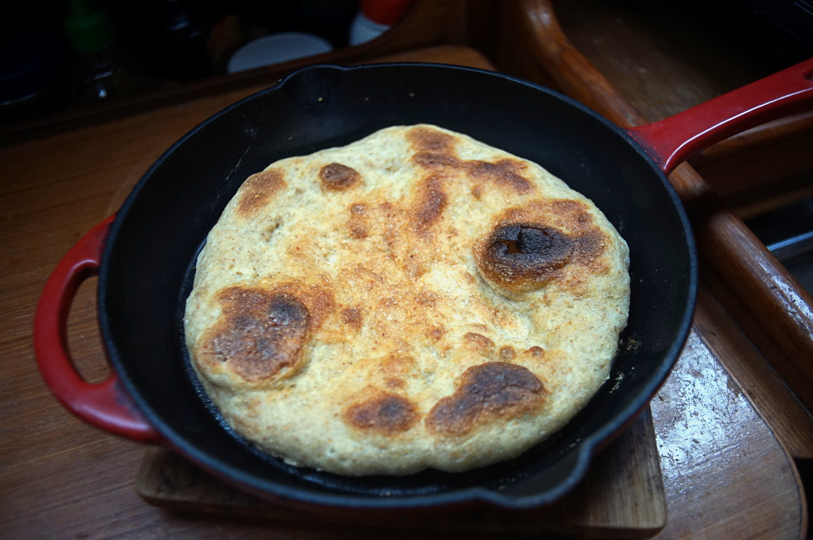
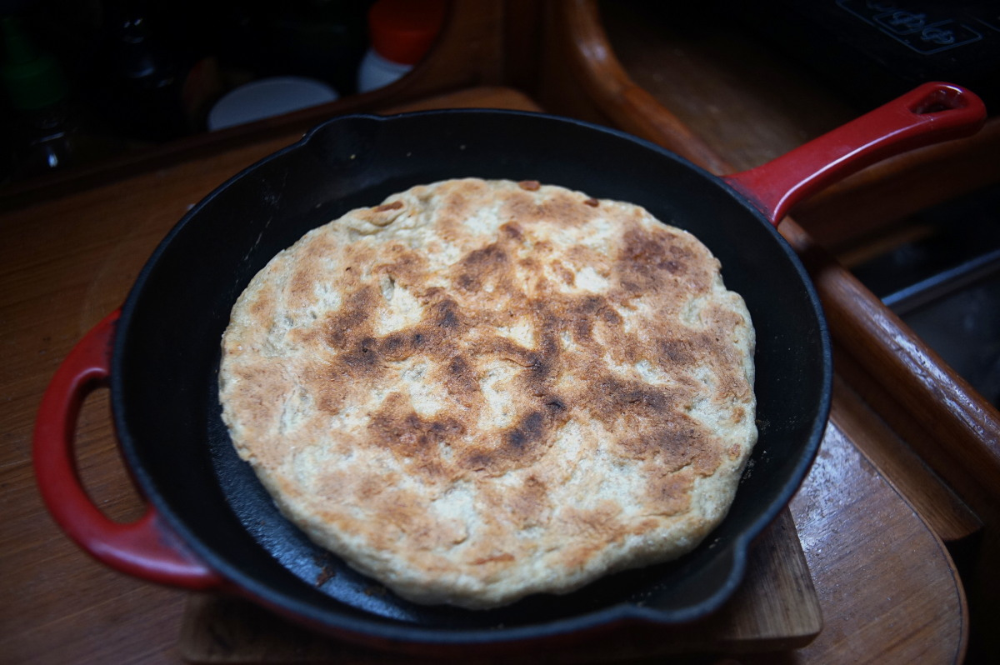

stovetop zaatar pizza
2x23 cm(9 in) pizzas — 90 minutes
First off, forgive the so-so, unphotogenic, borderline unappetizing photo at the top, we only ever prepare pizza in evenings and taking good photos while it's dark is near impossible on this boat. When the days get longer, as winter fades and spring settles in, we hope to take another, better picture of this dish. We can assure you that this pizza kicks some serious ass.
Making pizza on the stovetop is very possible(essential in our case because we don't have a oven), it is different than its oven-baked equivalent, but we think it is a great and satisfying alternative. It involves cooking the pizza dough and toppings separately (no way to broil the top of the pizza). Baking the crust on the stovetop requires the use of a heavy pan and a good lid(to help trap the heat), and it is also necessary to flip the dough at least once to ensure that it is cooked all the way through.
We have prepared pizza like this for a few years now, and are quite pleased with the result.
Yeast. When making pizza, I use 1% yeast in my dough(that's how I arrived at 2.70 g). I have a small digital scale that permits me to weigh such quantities. It is possible to use active dry yeast instead of instant (1 tsp instant = 1 1/4 tsp active), although it will be necessary the dissolve the yeast in the warm sugar water first for 5-10 minutes(until foamy) to proof it. It is not necessary to proof the yeast, you can add it directly in the flour, but in this recipe I proof my instant yeast because it is a way to ensure that the yeast is still active(it won't bloom if it isn't).
Cheese. We don't overcomplicate things when making cheese for pizza, we like having a runny cheesy sauce, but there are other recipes out there for melty, shreddable, plant-based cheeses. Note that the cheese won't melt unless you pop the pizza and toppings back into the cast iron pan on the stovetop at medium-high heat for an additional 5-10 minutes with a lid on.
Flour. Evidently, it is possible to replace the portion of whole wheat flour with 100% all-purpose.
Oven version. To cook these pizzas in the oven, don't pre-cook the dough, lay it out in the desired shape(circle, or rectangle), add the toppings and bake at 230 °C (450 °F) for 15-20 minutes. For a darker top, set the oven to broil for the last 5 minutes(keep watch though). Instead of making 2 pizzas, it's possible to make 1 large one.
 yellow onion1, medium
yellow onion1, medium olive oil15 ml
olive oil15 ml black olives7 whole olives
black olives7 whole olives- sun dried tomatoes7 tomatoes
 tahini35 ml
tahini35 ml ground turmeric1.5 g
ground turmeric1.5 g garlic powder1.5 g
garlic powder1.5 g white miso10 g
white miso10 g dijon mustard5 g
dijon mustard5 g soy milk80 ml
soy milk80 ml
topping
- Cut 1 medium yellow onions into thin slices. Pan-fry the onion slices in olive oil at medium-heat until the onions are lightly browned and tender. Set aside. (I like to add a very tiny pinch of baking soda to hasten the browning of the onions, with this technique it takes 8 to 10 minutes, otherwise it can take 45 minutes).
- Slice some black olives (I cut whole pitted olives lengthwise in 3's), as well as some thinly-sliced sun-dried tomatoes(or fresh tomatoes). Set aside.
- Cheese: In a small bowl, add 35 g (2 tbsp) of tahini, 1.5 g (1/2 tsp) of turmeric powder(dry), 1.5 g (1/2 tsp) of garlic powder, 10 g (1 tsp) of white miso, 5 g (1 tsp) of dijon mustard (see to make your own mustard). Add 80 ml (1/3 cup) of soy milk gradually, the mixture should be runny, but not too watery. Reserve for later.
 water250 ml, warm
water250 ml, warm granulated sugar7 g
granulated sugar7 g- instant yeast2.70 g
- olive oil20 ml
 whole wheat flour60 g
whole wheat flour60 g all purpose flour210 g
all purpose flour210 g sea salt5 g
sea salt5 g
dough
- Measure 250 ml (1 cup) of warm water, dissolve 7 g (1/2 tbsp) of sugar, then add 2.70 g (roughly 1/2 tsp) of instant yeast and let it foam and bloom for 5-10 minutes(to proof it). Mix in 30 ml (2 tbsp) of olive oil.
- In a large bowl, mix 60 g (1/2 cup) of whole wheat flour, 210 g (1 3/4 cups) of all purpose flour, and 5 g (1 tsp) of salt. Mix well.
- Create a well in the flour mixture, and pour the water into it. Stir until the flour is well incorporated. Sprinkle a bit of flour onto a working surface, transfer the dough onto it, and knead the dough anywhere from 5 minutes, or until the dough should barely stick to the sides of the bowl(although the bottom still can, and that's fine, I add a tiny bit of flour at times if it's too sticky), don't overknead, in all the dough just needs to hold itself well together. Coat the inside of the mixing bowl with some oil, transfer the dough ball back into it, and coat the top of the dough lightly with some more olive oil. Cover the bowl with a clean damp cloth, leave it in a warm place to rise for 60 minutes, or until it gets nice and puffy(it can take longer if it's cold).
- Sprinkle some more flour onto a working surface and transfer the dough back onto it. Divide the dough into 2 equal balls, then roll out each ball of dough out into a flat 23 cm (9 inch) circle. Allow the dough to rise for an additional 90 minutes.
- Preheat a cast iron pan(ours is 23 cm | 9 inch) at low heat, at first for 5 minutes, then raise the temperature to high heat for an additional 5 minutes. How long it takes to properly depends on the type of heat and the thickness of the skillet. A drop of water dropped into the pan ought to sizzle. Transfer the pizza dough into the pan, stretching it out to occupy the whole bottom of the pan prior to setting it down, then cover the pan with a lid. Lower to medium-low heat and cook for 10 minutes, or until the bottom is well browned and crunchy(having a good crunchy bottom crust makes a hell of a difference). Flip the pizza, and cook for an additional 10 minutes. Set the dough aside, and repeat for the other half of the dough.
- olive oil30 ml
- zaatar15 g
assemble
- With the pizza dough in the cast iron pan, brush the top of the pizza with a thin coat of olive oil, sprinkle a generous amount of za'atar spice mix overtop (the zaatar will stick to the olive oil). Then add the olives, cooked onions, sun-dried tomatoes, and pour the cheese overtop of everything.
- Bring the heat up to medium-heat, when hot, cover the pizza and cook it for 6-10 minutes. Transfer to a cutting board, slice up and enjoy!